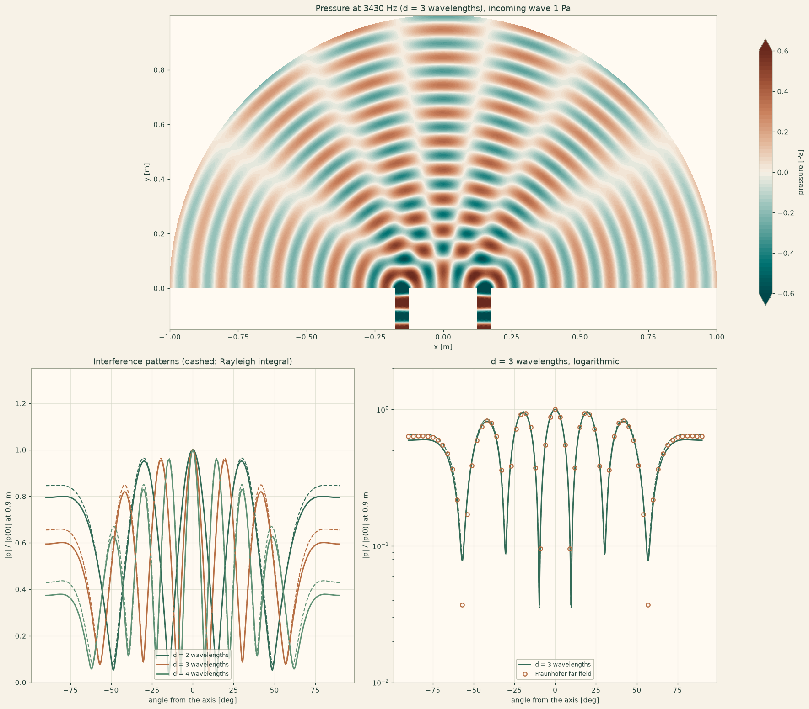
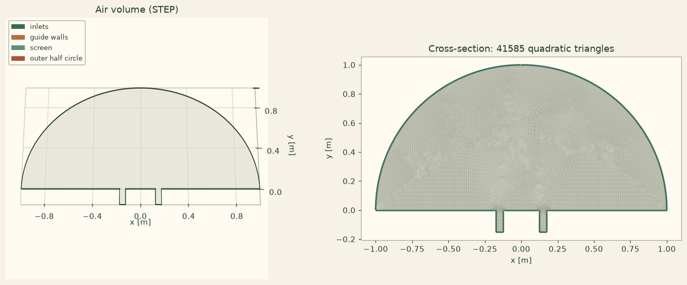

Docs › Examples › Double-slit diffraction of sound
Pressure acoustics, frequency domain · 2D
Double-slit diffraction of sound
Young's double-slit experiment with sound: a plane wave runs up two waveguides into a rigid screen and forms interference fringes behind it.
Run locally with OneSimulation. The example downloads are free. Running them requires an activated runtime. Runtime Alpha 0.2.1a7 · CPython 3.13 on macOS (Apple Silicon), Ubuntu 22.04 (x86-64), and Windows x64. Installation and activation · View pilot plans. Scope of the reference checks.


What it computes
OneSimulation cuts the air from a STEP plate and solves the two-dimensional Helmholtz equation with quadratic triangles graded towards the slit edges; the inlets are plane-wave ports, the outer half circle carries the exact cylindrical-wave admittance, and the harmonic pressure provider solves three frequencies with the slits two, three and four wavelengths apart. The script that builds the STEP file comes with the notebook.
What it checks
All interference minima up to 62 degrees fall within 0.9 degrees of the Fraunhofer rule (for example 9.75, 30.50, 57.00 against 9.59, 30.00, 56.44 degrees at d = 3 wavelengths), and the level on a half circle at 0.9 m follows Rayleigh's uniform-slit integral to 0.9 dB at d = 3 wavelengths and to about 2 dB at the other two spacings, where the non-uniform velocity in the real slits matters.
Geometry
The notebook starts at the import of the CAD file double_slit_diffraction.step: STEP (AP242), readable by any CAD program, with the names of the faces that the boundary conditions use. Put it next to the notebook.


The geometry script
The script double_slit_diffraction_geometry.py builds the geometry with the CAD objects of OneSimulation and writes the file. Change a dimension there, run it, and run the notebook again.
"""Geometry of the OneSimulation example "Double-slit diffraction of sound".
Builds the air of the double-slit experiment as a thin plate with the CAD objects of OneSimulation:
two waveguides 50 mm wide and 150 mm long, 300 mm apart, open through a rigid screen into a half
disc of air of radius 1 m. It writes double_slit_diffraction.step with the faces inlet, guide,
screen and outer.
"""
from onesim.cad.d2 import Path, Profile, Segment
from onesim.cad.d3 import Prism
width, spacing, guide, outer = 0.05, 0.30, 0.15, 1.0
left, right = -spacing / 2, spacing / 2
outline = Path(
(-outer, 0.0),
(
Segment((left - width / 2, 0.0), name="screen"),
Segment((left - width / 2, -guide), name="guide"),
Segment((left + width / 2, -guide), name="inlet"),
Segment((left + width / 2, 0.0), name="guide"),
Segment((right - width / 2, 0.0), name="screen"),
Segment((right - width / 2, -guide), name="guide"),
Segment((right + width / 2, -guide), name="inlet"),
Segment((right + width / 2, 0.0), name="guide"),
Segment((outer, 0.0), name="screen"),
Segment((-outer, 0.0), center=(0.0, 0.0), name="outer"),
),
)
Prism(profile=Profile(outline), height=0.01).save("double_slit_diffraction.step")The notebook
The complete notebook, cell by cell. Run it to produce the figures and the comparison printout.
Young's double-slit experiment with sound: two waveguides of width \(w=50\) mm, whose centres are \(d=300\) mm apart, carry the same plane wave to two slits in a rigid screen. Behind the screen the two slit waves overlap; where their path difference is a whole number of wavelengths they add, where it is half a wavelength they cancel. The model is two-dimensional (a cut through long slits); the pressure obeys
| boundary | condition |
|---|---|
| inlets of the two guides | incoming plane wave \(p_\mathrm{in}=1\) Pa, reflected wave absorbed: \(v_n=(p-2p_\mathrm{in})/(\rho_0c)\) |
| guide walls and screen | rigid, \(\partial p/\partial n=0\) |
| half circle of radius \(R=1\) m | outgoing cylindrical wave, \(v_n=-i\,\dfrac{H_1^{(2)}(kR)}{H_0^{(2)}(kR)}\,\dfrac{p}{\rho_0c}\) |
The condition on the half circle is exact for the circularly symmetric part of the outgoing wave; the directional part leaves a small reflection of order \(1/(kR)^2\approx10^{-3}\).
Reference. If each slit moves the air uniformly, Rayleigh's integral gives the field behind the screen exactly (P. M. Morse and K. U. Ingard, Theoretical Acoustics, §7.4):
and far away it becomes the Fraunhofer pattern of the double slit (M. Born and E. Wolf, Principles of Optics, §8.6),
with minima at \(\sin\theta=(m+\tfrac12)\lambda/d\). The pattern is computed for \(d=2\lambda\), \(3\lambda\) and \(4\lambda\) (2287, 3430 and 4573 Hz).
import numpy as np
from onesim.cad.exchange import load
from onesim.meshing import TriangularMesher
from onesim.numerics.fem import FiniteElement, Lagrange
from onesim.physics.acoustics import (
AcousticHarmonicPressure,
ComplexPressurePencil,
ConstantPressureForms,
PressureAdmittanceBoundary,
PressureTraceSamples,
SampledPressureAdmittanceForms,
SampledPressureVolumeForms,
pressure_space_volume_samples,
)
from onesim.visualization import plots, theme
from scipy.sparse.linalg import spsolve
from scipy.special import hankel2
theme.set()
c0, rho0, incident = 343.0, 1.204, 1.0
impedance = rho0 * c0
width, spacing = 0.05, 0.30
ratios = np.array([2.0, 3.0, 4.0])
frequencies = ratios * c0 / spacingGeometry and mesh
load reads the plate of air written by double_slit_diffraction_geometry.py; section cuts it at half thickness and keeps the face names. The triangles are an eighth of the shortest wavelength (9.4 mm) and shrink to 1.5 mm at the four slit edges.
air = load("double_slit_diffraction.step")
plane = air.section((0, 0, 1), origin=(0, 0, 0.005))
faces = plane.boundaries
outer = plane.size[0] / 2
edges = np.array(
[
[x, 0.0]
for x in (
-spacing / 2 - width / 2,
-spacing / 2 + width / 2,
spacing / 2 - width / 2,
spacing / 2 + width / 2,
)
]
)
h = c0 / frequencies.max() / 8
mesh = TriangularMesher(
target_size=h,
size_field=lambda p: np.minimum(
h,
0.0015 + 0.25 * np.min(np.linalg.norm(p[:, None, :2] - edges, axis=2), axis=1),
),
).generate(plane)
view = plots.Camera(elevation=60, azimuth=-90)
fig = plots.figure(1, 2, size=(16, 6))
plots.geometry(
air,
selection={
"inlets": air.boundaries.inlet,
"guide walls": air.boundaries.guide,
"screen": air.boundaries.screen,
"outer half circle": air.boundaries.outer,
},
labels=False,
camera=view,
title="Air volume (STEP)",
ax=fig[0],
)
plots.mesh(
mesh,
groups=("all",),
legend=False,
title=f"Cross-section: {mesh.cell_count} quadratic triangles",
ax=fig[1],
)
plots.show()Model
Quadratic Lagrange elements; SampledPressureVolumeForms integrates the volume forms, and the boundary traces of the inlets and of the half circle come from the space's trace_data. The inlets carry the admittance \(1/\rho_0c\) and the load \(2i\omega p_\mathrm{in}/(\rho_0c)\int\phi_i\, \mathrm dS\) of the incoming wave, the half circle the cylindrical-wave admittance. AcousticHarmonicPressure solves the three frequencies.
space = FiniteElement(element=Lagrange(order=2)).bind_space(mesh)
volume = ConstantPressureForms(
*SampledPressureVolumeForms(
size=space.dof_count,
samples=lambda: pressure_space_volume_samples(space),
inverse_density=lambda omega, sample: 1 / rho0,
compressibility=lambda omega, sample: 1 / impedance / c0,
)(0.0)
)
traces = {
face: SampledPressureAdmittanceForms(
size=space.dof_count,
admittance=lambda omega, sample: 1.0,
samples=lambda face=face: iter(
[
PressureTraceSamples(space.cell_dofs[owner], points, weights, basis)
for owner, points, weights, _, basis, _ in map(
space.trace_data, mesh.facets(getattr(faces, face))
)
]
),
)(0.0)
for face in ("inlet", "outer")
}
cylindrical = (
lambda omega: -1j
* hankel2(1, omega * outer / c0)
/ hankel2(0, omega * outer / c0)
/ impedance
)
boundary = PressureAdmittanceBoundary(
lambda omega: traces["inlet"] / impedance + cylindrical(omega) * traces["outer"]
)
result = AcousticHarmonicPressure(
operator=ComplexPressurePencil(volume, boundary=boundary),
angular_frequencies=2 * np.pi * frequencies,
load=lambda omega: 2j
* omega
* incident
/ impedance
* (traces["inlet"] @ np.ones(space.dof_count)),
linear_solver=spsolve,
).run()
print(f"{space.dof_count} pressure unknowns, {mesh.cell_count} triangles")Reference
Rayleigh's integral over the two slits with 64 Gauss points across each slit.
nodes, weights = np.polynomial.legendre.leggauss(64)
sources = np.concatenate(
[centre + width / 2 * nodes for centre in (-spacing / 2, spacing / 2)]
)
rayleigh = lambda omega, points: hankel2(
0, omega / c0 * np.hypot(points[:, :1] - sources, points[:, 1:])
) @ np.tile(weights, 2)
fraunhofer = lambda ratio, theta: np.abs(
np.cos(np.pi * ratio * np.sin(theta))
* np.sinc(ratio * width / spacing * np.sin(theta))
)Results
The pressure amplitude on a half circle of radius 0.9 m, normalised by its value straight ahead, against Rayleigh's integral at the same radius; and the angles of the interference minima up to 75° against the Fraunhofer rule. Towards grazing angles the computed field falls below the uniform-slit integral: the real slit velocity is not uniform but peaks at the edges, which matters most along the screen.
theta = np.radians(np.linspace(-90.0, 90.0, 721))
arc = 0.9 * np.column_stack((np.sin(theta), np.cos(theta)))
ahead = theta.size // 2
patterns, references = {}, {}
on_arc = np.abs(np.asarray(space.evaluate(result.pressure.T, arc)))
for ratio, omega, computed in zip(ratios, 2 * np.pi * frequencies, on_arc.T):
exact = np.abs(rayleigh(omega, arc))
patterns[ratio], references[ratio] = (
computed / computed[ahead],
exact / exact[ahead],
)
minima = [
i
for i in range(ahead, theta.size - 1)
if computed[i] < min(computed[i - 1], computed[i + 1])
and theta[i] < np.radians(75)
]
fraunhofer_minima = np.degrees(np.arcsin((np.arange(len(minima)) + 0.5) / ratio))
level = 20 * np.log10(patterns[ratio] / references[ratio])
print(
f"d = {ratio:.0f} wavelengths ({omega / (2 * np.pi):.0f} Hz): minima at "
+ ", ".join(f"{np.degrees(theta[i]):.2f}" for i in minima)
+ " deg; Fraunhofer "
+ ", ".join(f"{m:.2f}" for m in fraunhofer_minima)
+ f" deg; level against Rayleigh's integral within 60 deg of the axis where the pattern is above -20 dB: largest deviation "
f"{np.max(np.abs(level[(patterns[ratio] > 0.1) & (np.abs(theta) <= np.radians(60))])):.2f} dB, beyond 60 deg "
f"{np.max(np.abs(level[np.abs(theta) > np.radians(60)])):.2f} dB"
)Figure
The instantaneous pressure behind the screen at \(d=3\lambda\), with the bright and dark fringes, and the three interference patterns against Rayleigh's integral (dashed) and Fraunhofer's far field (dots).
pressure = result.pressure[1][: mesh.node_count].real
x, y = np.asarray(mesh.coordinates).T
fig = plots.figure(layout=[["field", "field"], ["p0", "p1"]], size=(16, 14))
plots.heatmap(
x,
y,
pressure,
triangles=np.asarray(mesh.cells),
colormap="diverging",
limits=(-0.6, 0.6),
label="pressure [Pa]",
title=f"Pressure at {frequencies[1]:.0f} Hz (d = 3 wavelengths), incoming wave 1 Pa",
ax=fig["field"],
)
plots.line(
np.degrees(theta),
{f"d = {ratio:.0f} wavelengths": patterns[ratio] for ratio in ratios},
reference={f"d = {ratio:.0f} wavelengths": references[ratio] for ratio in ratios},
xlabel="angle from the axis [deg]",
ylabel="|p| / |p(0)| at 0.9 m",
title="Interference patterns (dashed: Rayleigh integral)",
legend="lower center",
ylimits=(0, 1.35),
ax=fig["p0"],
)
plots.line(
np.degrees(theta),
{"d = 3 wavelengths": patterns[3.0]},
reference={"d = 3 wavelengths": references[3.0]},
points={
"Fraunhofer far field": (np.degrees(theta[::12]), fraunhofer(3.0, theta[::12]))
},
scale="logy",
ylimits=(1e-2, 2),
xlabel="angle from the axis [deg]",
ylabel="|p| / |p(0)| at 0.9 m",
title="d = 3 wavelengths, logarithmic",
legend="lower center",
ax=fig["p1"],
)
plots.show()Going further
Close one slit in double_slit_diffraction_geometry.py (drop one guide) and write the STEP file again: the fringes vanish and the single-slit envelope remains. Widen the slits towards a wavelength to see the envelope's own zeros suppress interference orders.